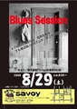

いくら忙しくても、演奏しないと死む。
誰か遊びましょうw
今のところなんとかいけそう…。
(追記あり)
無事たどり着きました。 若い人でバリバリ歌う人がいたのが印象的でした。 あの人たちはどこでブルース覚えたんだろう？ なんとなく、僕らの世代がそこにたどり着くのと違った回路ができているような気がしました。
山崎まさよしとかからだったりして？？
「演奏しないと…」と書きましたが、やっぱり若干死んでるようです。 バンドの音にあおられながら歌うというのは、なかなか特殊な経験なので、やっぱり常に場数を踏んでいないと、すぐ駄目になるようですね。
リハビリが必要だ～（泣
写真はマイミクどすこいさんが撮ってくれました。 なぜかドラマー…w